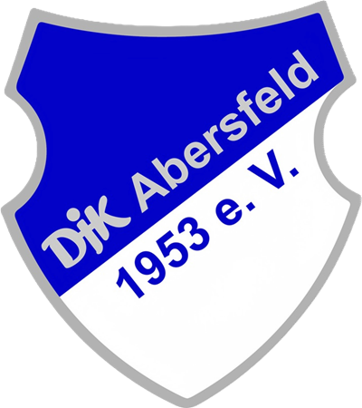

DJK AbersfeldAuch die Korbballerinnen spielen in einer Spielgemeinschaft mit Löffelsterz. Die Mannschaften nehmen unter SV Löffelsterz am Spielbetrieb teil.
Neben den Frauen, die in Sommer- und Winterrunde in der höchsten Liga spielen, decken die Korbballerinnen auch alle Altersklassen bis zur Jugend 9 ab.
Auch für die Jüngsten wird ein korbballspezifisches Balltraining in Löffelsterz angeboten.
Ansprechpartnerin und Abteilungsleiterin DJK Abersfeld: Nina-Ruth Halbig